Chart Types in controlcharts
chart_types.RmdOverview
The controlcharts package supports a comprehensive range
of Statistical Process Control (SPC) charts and funnel plots. This
vignette demonstrates all available chart types with examples of their
usage.
SPC Chart Types
The package supports 14 different SPC chart types, each designed for specific data characteristics and monitoring scenarios.
Basic Charts
Run Chart
A run chart displays data over time without statistical control limits. It’s useful for visualizing trends and patterns in data.
# Simulate 24 months of data
dat_run <- data.frame(
month = seq(as.Date("2024-01-01"), length.out = 24, by = "month"),
y = rnorm(24, mean = 100, sd = 10)
)
chart_run <- spc(data = dat_run,
keys = month,
numerators = y,
spc_settings = list(chart_type = "run"))
chart_run$static_plot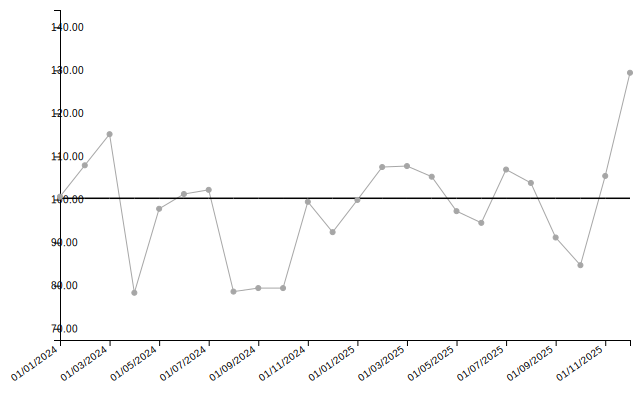
| date | value | target | trend_line |
|---|---|---|---|
| 01/01/2024 | 100.67 | 100.29 | 94.37 |
| 01/02/2024 | 107.95 | 100.29 | 94.74 |
| 01/03/2024 | 115.18 | 100.29 | 95.11 |
| 01/04/2024 | 78.35 | 100.29 | 95.48 |
| 01/05/2024 | 97.86 | 100.29 | 95.85 |
| 01/06/2024 | 101.29 | 100.29 | 96.22 |
Individuals Chart (i-chart)
The individuals chart (also called an XmR chart) is the default chart type. It monitors individual measurements with control limits based on the moving range.
dat_i <- data.frame(
month = seq(as.Date("2024-01-01"), length.out = 24, by = "month"),
y = rnorm(24, mean = 50, sd = 5)
)
chart_i <- spc(data = dat_i,
keys = month,
numerators = y,
spc_settings = list(chart_type = "i"))
chart_i$static_plot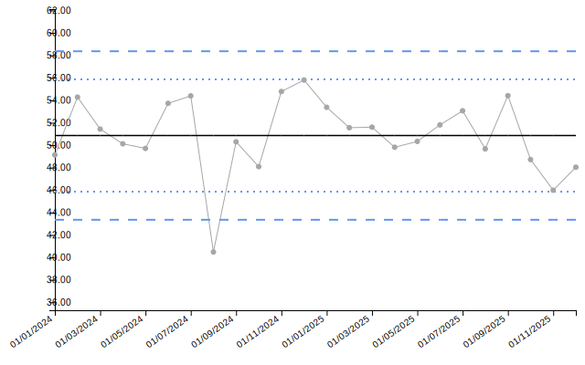
| date | value | target | ll99 | ll95 | ll68 | ul68 | ul95 | ul99 | trend_line |
|---|---|---|---|---|---|---|---|---|---|
| 01/01/2024 | 49.13 | 50.86 | 43.35 | 45.85 | 48.36 | 53.36 | 55.86 | 58.36 | 51.48 |
| 01/02/2024 | 54.28 | 50.86 | 43.35 | 45.85 | 48.36 | 53.36 | 55.86 | 58.36 | 51.43 |
| 01/03/2024 | 51.43 | 50.86 | 43.35 | 45.85 | 48.36 | 53.36 | 55.86 | 58.36 | 51.37 |
| 01/04/2024 | 50.12 | 50.86 | 43.35 | 45.85 | 48.36 | 53.36 | 55.86 | 58.36 | 51.32 |
| 01/05/2024 | 49.71 | 50.86 | 43.35 | 45.85 | 48.36 | 53.36 | 55.86 | 58.36 | 51.26 |
| 01/06/2024 | 53.72 | 50.86 | 43.35 | 45.85 | 48.36 | 53.36 | 55.86 | 58.36 | 51.21 |
Individuals Chart with Ratios
i-charts can also monitor ratios by providing both numerators and denominators. The chart will automatically calculate and plot the ratio with appropriate control limits.
# Example: monitoring average processing time per case
dat_ratio <- data.frame(
month = seq(as.Date("2024-01-01"), length.out = 24, by = "month"),
total_time = rpois(24, lambda = 120),
num_cases = rpois(24, lambda = 25)
)
chart_ratio <- spc(data = dat_ratio,
keys = month,
numerators = total_time,
denominators = num_cases,
spc_settings = list(chart_type = "i"))
chart_ratio$static_plot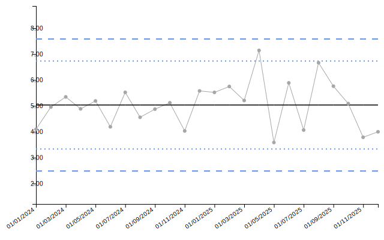
| date | numerator | denominator | value | target | ll99 | ll95 | ll68 | ul68 | ul95 | ul99 | trend_line |
|---|---|---|---|---|---|---|---|---|---|---|---|
| 01/01/2024 | 127 | 31 | 4.10 | 5.03 | 2.49 | 3.34 | 4.18 | 5.88 | 6.73 | 7.58 | 4.93 |
| 01/02/2024 | 114 | 23 | 4.96 | 5.03 | 2.49 | 3.34 | 4.18 | 5.88 | 6.73 | 7.58 | 4.94 |
| 01/03/2024 | 123 | 23 | 5.35 | 5.03 | 2.49 | 3.34 | 4.18 | 5.88 | 6.73 | 7.58 | 4.95 |
| 01/04/2024 | 127 | 26 | 4.88 | 5.03 | 2.49 | 3.34 | 4.18 | 5.88 | 6.73 | 7.58 | 4.96 |
| 01/05/2024 | 109 | 21 | 5.19 | 5.03 | 2.49 | 3.34 | 4.18 | 5.88 | 6.73 | 7.58 | 4.97 |
| 01/06/2024 | 109 | 26 | 4.19 | 5.03 | 2.49 | 3.34 | 4.18 | 5.88 | 6.73 | 7.58 | 4.98 |
Individuals Chart with Median Centerline (i_m)
Uses the median instead of the mean for the centerline, making it more robust to outliers.
dat_im <- data.frame(
month = seq(as.Date("2024-01-01"), length.out = 24, by = "month"),
y = c(rnorm(20, mean = 50, sd = 5), 75, 78, 72, 71) # Some outliers
)
chart_im <- spc(data = dat_im,
keys = month,
numerators = y,
spc_settings = list(chart_type = "i_m"))
chart_im$static_plot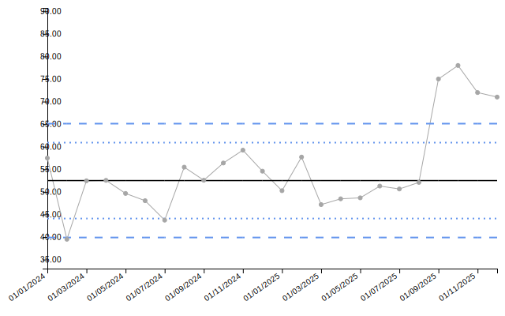
Individuals Chart with Median Limits (i_mm)
You can use both median centerline and median-based moving range limits.
chart_imm <- spc(data = dat_im,
keys = month,
numerators = y,
spc_settings = list(chart_type = "i_mm"))
chart_imm$static_plot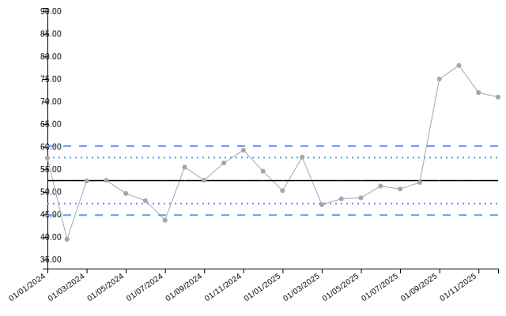
Moving Range Chart (mr)
Plots the moving range between consecutive measurements.
dat_mr <- data.frame(
month = seq(as.Date("2024-01-01"), length.out = 24, by = "month"),
y = rnorm(24, mean = 10, sd = 2)
)
chart_mr <- spc(data = dat_mr,
keys = month,
numerators = y,
spc_settings = list(chart_type = "mr"))
chart_mr$static_plot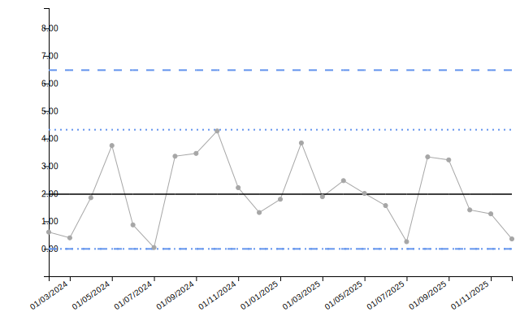
Proportion Charts
p-chart (Proportions)
Monitors proportions when the numerator cannot exceed the denominator (e.g., defect rates, complication rates).
dat_p <- data.frame(
month = seq(as.Date("2024-01-01"), length.out = 24, by = "month"),
denominator = sample(80:120, 24, replace = TRUE)
)
dat_p$numerator <- rbinom(24, size = dat_p$denominator, prob = 0.15)
chart_p <- spc(data = dat_p,
keys = month,
numerators = numerator,
denominators = denominator,
spc_settings = list(chart_type = "p"))
chart_p$static_plot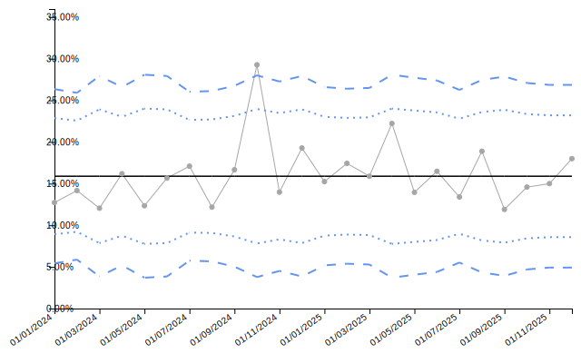
| date | numerator | denominator | value | target | ll99 | ll95 | ll68 | ul68 | ul95 | ul99 | trend_line |
|---|---|---|---|---|---|---|---|---|---|---|---|
| 01/01/2024 | 14 | 110 | 12.727 | 15.889 | 5.432 | 8.918 | 12.403 | 19.374 | 22.860 | 26.345 | 0.152 |
| 01/02/2024 | 17 | 120 | 14.167 | 15.889 | 5.877 | 9.214 | 12.551 | 19.226 | 22.563 | 25.900 | 0.152 |
| 01/03/2024 | 10 | 83 | 12.048 | 15.889 | 3.851 | 7.863 | 11.876 | 19.901 | 23.914 | 27.927 | 0.153 |
| 01/04/2024 | 17 | 105 | 16.190 | 15.889 | 5.186 | 8.753 | 12.321 | 19.456 | 23.024 | 26.591 | 0.154 |
| 01/05/2024 | 10 | 81 | 12.346 | 15.889 | 3.703 | 7.765 | 11.827 | 19.951 | 24.012 | 28.074 | 0.155 |
| 01/06/2024 | 13 | 83 | 15.663 | 15.889 | 3.851 | 7.863 | 11.876 | 19.901 | 23.914 | 27.927 | 0.155 |
Rate Charts
u-chart (Rates)
Monitors rates (events per unit exposure), such as infections per 1000 patient-days.
dat_u <- data.frame(
month = seq(as.Date("2024-01-01"), length.out = 24, by = "month"),
infections = rpois(24, lambda = 8),
patient_days = sample(200:400, 24, replace = TRUE)
)
chart_u <- spc(data = dat_u,
keys = month,
numerators = infections,
denominators = patient_days,
spc_settings = list(chart_type = "u", multiplier = 1000))
chart_u$static_plot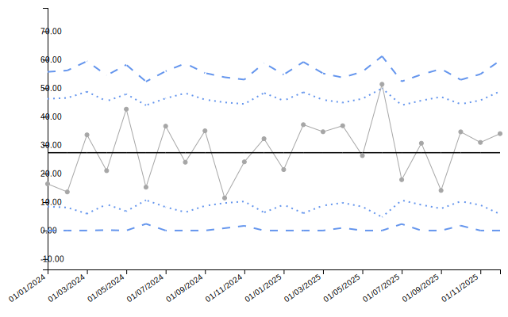
| date | numerator | denominator | value | target | ll99 | ll95 | ll68 | ul68 | ul95 | ul99 | trend_line |
|---|---|---|---|---|---|---|---|---|---|---|---|
| 01/01/2024 | 5 | 305 | 16.39 | 27.35 | 0.00 | 8.41 | 17.88 | 36.82 | 46.28 | 55.75 | 0.02 |
| 01/02/2024 | 4 | 295 | 13.56 | 27.35 | 0.00 | 8.09 | 17.72 | 36.98 | 46.60 | 56.23 | 0.02 |
| 01/03/2024 | 8 | 238 | 33.61 | 27.35 | 0.00 | 5.91 | 16.63 | 38.07 | 48.79 | 59.50 | 0.02 |
| 01/04/2024 | 7 | 333 | 21.02 | 27.35 | 0.16 | 9.22 | 18.28 | 36.41 | 45.47 | 54.53 | 0.02 |
| 01/05/2024 | 11 | 258 | 42.64 | 27.35 | 0.00 | 6.76 | 17.05 | 37.64 | 47.94 | 58.23 | 0.03 |
| 01/06/2024 | 6 | 394 | 15.23 | 27.35 | 2.35 | 10.68 | 19.02 | 35.68 | 44.01 | 52.34 | 0.03 |
Count Charts
c-chart (Counts)
Monitors count data where each observation represents the number of events in a fixed area of opportunity.
dat_c <- data.frame(
month = seq(as.Date("2024-01-01"), length.out = 24, by = "month"),
defects = rpois(24, lambda = 12)
)
chart_c <- spc(data = dat_c,
keys = month,
numerators = defects,
spc_settings = list(chart_type = "c"))
chart_c$static_plot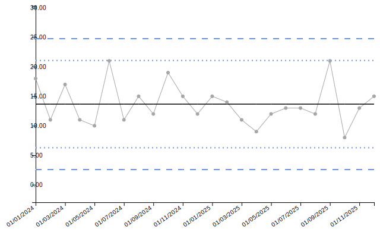
| date | value | target | ll99 | ll95 | ll68 | ul68 | ul95 | ul99 | trend_line |
|---|---|---|---|---|---|---|---|---|---|
| 01/01/2024 | 18 | 13.67 | 2.58 | 6.27 | 9.97 | 17.36 | 21.06 | 24.76 | 14.51 |
| 01/02/2024 | 11 | 13.67 | 2.58 | 6.27 | 9.97 | 17.36 | 21.06 | 24.76 | 14.43 |
| 01/03/2024 | 17 | 13.67 | 2.58 | 6.27 | 9.97 | 17.36 | 21.06 | 24.76 | 14.36 |
| 01/04/2024 | 11 | 13.67 | 2.58 | 6.27 | 9.97 | 17.36 | 21.06 | 24.76 | 14.29 |
| 01/05/2024 | 10 | 13.67 | 2.58 | 6.27 | 9.97 | 17.36 | 21.06 | 24.76 | 14.21 |
| 01/06/2024 | 21 | 13.67 | 2.58 | 6.27 | 9.97 | 17.36 | 21.06 | 24.76 | 14.14 |
Sample-Based Charts
xbar Chart (Sample Means)
Monitors the mean of samples when multiple measurements are taken at each time point.
dat_xbar <- data.frame(
month = seq(as.Date("2024-01-01"), length.out = 24, by = "month"),
sample_mean = rnorm(24, mean = 100, sd = 3),
sample_size = rep(5, 24),
sample_sd = rchisq(24, df = 4) / 2
)
chart_xbar <- spc(data = dat_xbar,
keys = month,
numerators = sample_mean,
denominators = sample_size,
xbar_sds = sample_sd,
spc_settings = list(chart_type = "xbar"))
chart_xbar$static_plot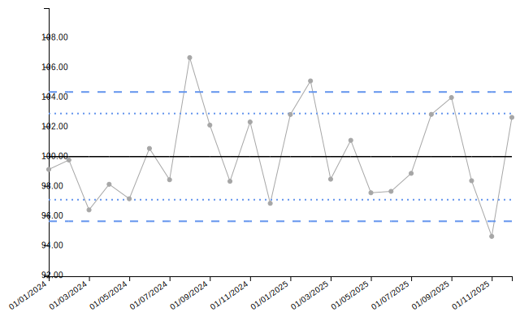
| date | value | target | ll99 | ll95 | ll68 | ul68 | ul95 | ul99 | trend_line |
|---|---|---|---|---|---|---|---|---|---|
| 01/01/2024 | 99.11 | 99.97 | 95.62 | 97.07 | 98.52 | 101.42 | 102.87 | 104.32 | 99.52 |
| 01/02/2024 | 99.74 | 99.97 | 95.62 | 97.07 | 98.52 | 101.42 | 102.87 | 104.32 | 99.56 |
| 01/03/2024 | 96.38 | 99.97 | 95.62 | 97.07 | 98.52 | 101.42 | 102.87 | 104.32 | 99.60 |
| 01/04/2024 | 98.11 | 99.97 | 95.62 | 97.07 | 98.52 | 101.42 | 102.87 | 104.32 | 99.64 |
| 01/05/2024 | 97.13 | 99.97 | 95.62 | 97.07 | 98.52 | 101.42 | 102.87 | 104.32 | 99.67 |
| 01/06/2024 | 100.52 | 99.97 | 95.62 | 97.07 | 98.52 | 101.42 | 102.87 | 104.32 | 99.71 |
Event-Based Charts
Event-based charts use sequential event numbers on the x-axis rather than dates.
g Chart (Geometric)
Monitors the number of non-events between events (e.g., days between accidents).
dat_g <- data.frame(
event = 1:20,
opportunities_between = rpois(20, lambda = 15)
)
chart_g <- spc(data = dat_g,
keys = event,
numerators = opportunities_between,
spc_settings = list(chart_type = "g"))
chart_g$static_plot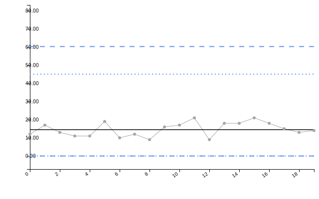
| date | value | target | ll99 | ll95 | ll68 | ul68 | ul95 | ul99 | trend_line |
|---|---|---|---|---|---|---|---|---|---|
| 0 | 12 | 14.5 | 0 | 0 | 0 | 29.89 | 45.08 | 60.28 | 12.77 |
| 1 | 17 | 14.5 | 0 | 0 | 0 | 29.89 | 45.08 | 60.28 | 12.97 |
| 2 | 13 | 14.5 | 0 | 0 | 0 | 29.89 | 45.08 | 60.28 | 13.18 |
| 3 | 11 | 14.5 | 0 | 0 | 0 | 29.89 | 45.08 | 60.28 | 13.38 |
| 4 | 11 | 14.5 | 0 | 0 | 0 | 29.89 | 45.08 | 60.28 | 13.58 |
| 5 | 19 | 14.5 | 0 | 0 | 0 | 29.89 | 45.08 | 60.28 | 13.79 |
t Chart (Time Between Events)
Monitors the time intervals between events.
dat_t <- data.frame(
event = 1:20,
days_between = rexp(20, rate = 1 / 30)
)
chart_t <- spc(data = dat_t,
keys = event,
numerators = days_between,
spc_settings = list(chart_type = "t"))
chart_t$static_plot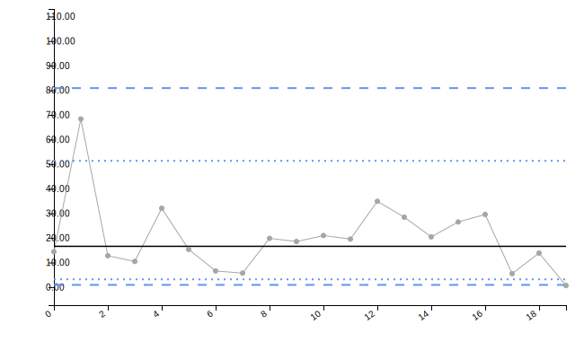
| date | value | target | ll99 | ll95 | ll68 | ul68 | ul95 | ul99 | trend_line |
|---|---|---|---|---|---|---|---|---|---|
| 0 | 14.40 | 16.59 | 0.92 | 3.17 | 7.97 | 30.5 | 51.34 | 80.9 | 25.67 |
| 1 | 68.34 | 16.59 | 0.92 | 3.17 | 7.97 | 30.5 | 51.34 | 80.9 | 25.09 |
| 2 | 12.76 | 16.59 | 0.92 | 3.17 | 7.97 | 30.5 | 51.34 | 80.9 | 24.52 |
| 3 | 10.45 | 16.59 | 0.92 | 3.17 | 7.97 | 30.5 | 51.34 | 80.9 | 23.95 |
| 4 | 32.05 | 16.59 | 0.92 | 3.17 | 7.97 | 30.5 | 51.34 | 80.9 | 23.37 |
| 5 | 15.34 | 16.59 | 0.92 | 3.17 | 7.97 | 30.5 | 51.34 | 80.9 | 22.80 |
Funnel Plot Types
Funnel plots are used to compare performance across multiple organizations or groups, accounting for natural variation due to different sample sizes.
PR - Proportion Funnel
The default funnel plot type for proportion data. Uses arc-sine transformation.
# Simulate complication rates across 10 hospitals
denoms_pr <- sample(100:300, 10)
dat_pr <- data.frame(
hospital = paste0("Hospital ", LETTERS[1:10]),
complications = rbinom(10, size = denoms_pr, prob = 0.12),
procedures = denoms_pr
)
funnel_pr <- funnel(data = dat_pr,
keys = hospital,
numerators = complications,
denominators = procedures,
funnel_settings = list(chart_type = "PR"))
funnel_pr$static_plot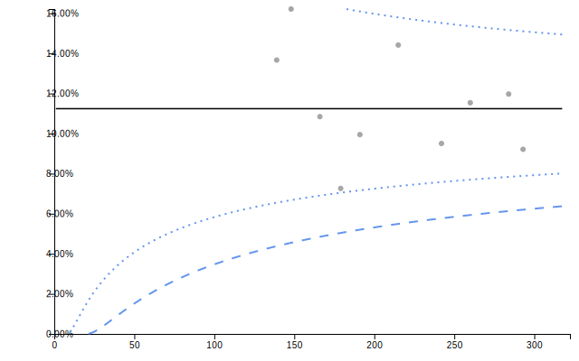
knitr::kable(funnel_pr$limits, digits = 3)| denominator | group | numerator | value | ll99 | ll95 | ll68 | ul68 | ul95 | ul99 | target |
|---|---|---|---|---|---|---|---|---|---|---|
| 139 | Hospital G | 19 | 13.669 | 4.381 | 6.549 | 8.719 | 14.041 | 17.004 | 20.751 | 11.242 |
| 148 | Hospital A | 24 | 16.216 | 4.548 | 6.677 | 8.792 | 13.951 | 16.811 | 20.424 | 11.242 |
| 166 | Hospital I | 18 | 10.843 | 4.848 | 6.903 | 8.922 | 13.793 | 16.477 | 19.856 | 11.242 |
| 179 | Hospital D | 13 | 7.263 | 5.040 | 7.046 | 9.004 | 13.695 | 16.268 | 19.503 | 11.242 |
| 191 | Hospital F | 19 | 9.948 | 5.203 | 7.167 | 9.072 | 13.614 | 16.096 | 19.212 | 11.242 |
| 215 | Hospital B | 31 | 14.419 | 5.492 | 7.378 | 9.191 | 13.472 | 15.798 | 18.708 | 11.242 |
| 242 | Hospital C | 23 | 9.504 | 5.771 | 7.580 | 9.304 | 13.339 | 15.519 | 18.238 | 11.242 |
| 260 | Hospital E | 30 | 11.538 | 5.935 | 7.698 | 9.369 | 13.263 | 15.358 | 17.969 | 11.242 |
| 284 | Hospital J | 34 | 11.972 | 6.132 | 7.839 | 9.447 | 13.173 | 15.170 | 17.652 | 11.242 |
| 293 | Hospital H | 27 | 9.215 | 6.200 | 7.887 | 9.474 | 13.142 | 15.105 | 17.544 | 11.242 |
PR Funnel with Overdispersion Adjustment
When data shows more variation than expected, overdispersion adjustment widens the control limits.
funnel_pr_od <- funnel(data = dat_pr,
keys = hospital,
numerators = complications,
denominators = procedures,
funnel_settings = list(chart_type = "PR",
od_adjust = "yes"))
funnel_pr_od$static_plot
knitr::kable(funnel_pr_od$limits, digits = 3)| denominator | group | numerator | value | ll99 | ll95 | ll68 | ul68 | ul95 | ul99 | target |
|---|---|---|---|---|---|---|---|---|---|---|
| 139 | Hospital G | 19 | 13.669 | 4.381 | 6.549 | 8.719 | 14.041 | 17.004 | 20.751 | 11.242 |
| 148 | Hospital A | 24 | 16.216 | 4.548 | 6.677 | 8.792 | 13.951 | 16.811 | 20.424 | 11.242 |
| 166 | Hospital I | 18 | 10.843 | 4.848 | 6.903 | 8.922 | 13.793 | 16.477 | 19.856 | 11.242 |
| 179 | Hospital D | 13 | 7.263 | 5.040 | 7.046 | 9.004 | 13.695 | 16.268 | 19.503 | 11.242 |
| 191 | Hospital F | 19 | 9.948 | 5.203 | 7.167 | 9.072 | 13.614 | 16.096 | 19.212 | 11.242 |
| 215 | Hospital B | 31 | 14.419 | 5.492 | 7.378 | 9.191 | 13.472 | 15.798 | 18.708 | 11.242 |
| 242 | Hospital C | 23 | 9.504 | 5.771 | 7.580 | 9.304 | 13.339 | 15.519 | 18.238 | 11.242 |
| 260 | Hospital E | 30 | 11.538 | 5.935 | 7.698 | 9.369 | 13.263 | 15.358 | 17.969 | 11.242 |
| 284 | Hospital J | 34 | 11.972 | 6.132 | 7.839 | 9.447 | 13.173 | 15.170 | 17.652 | 11.242 |
| 293 | Hospital H | 27 | 9.215 | 6.200 | 7.887 | 9.474 | 13.142 | 15.105 | 17.544 | 11.242 |
SR - Standardised Ratio Funnel
Used for indirectly standardized ratios (e.g., HSMR - Hospital Standardised Mortality Ratio).
# Simulate observed and expected deaths
dat_sr <- data.frame(
hospital = paste0("Hospital ", LETTERS[1:10]),
observed_deaths = rpois(10, lambda = sample(30:80, 10)),
expected_deaths = sample(30:80, 10)
)
funnel_sr <- funnel(data = dat_sr,
keys = hospital,
numerators = observed_deaths,
denominators = expected_deaths,
funnel_settings = list(chart_type = "SR"))
funnel_sr$static_plot
knitr::kable(funnel_sr$limits, digits = 3)| denominator | group | numerator | value | ll99 | ll95 | ll68 | ul68 | ul95 | ul99 | target |
|---|---|---|---|---|---|---|---|---|---|---|
| 35 | Hospital I | 43 | 1.229 | 0.558 | 0.697 | 0.833 | 1.198 | 1.391 | 1.641 | 1 |
| 38 | Hospital J | 68 | 1.789 | 0.572 | 0.708 | 0.839 | 1.189 | 1.373 | 1.610 | 1 |
| 42 | Hospital F | 55 | 1.310 | 0.590 | 0.721 | 0.847 | 1.178 | 1.352 | 1.575 | 1 |
| 54 | Hospital B | 63 | 1.167 | 0.632 | 0.751 | 0.865 | 1.155 | 1.305 | 1.496 | 1 |
| 56 | Hospital A | 35 | 0.625 | 0.637 | 0.755 | 0.867 | 1.151 | 1.299 | 1.486 | 1 |
| 57 | Hospital D | 65 | 1.140 | 0.640 | 0.757 | 0.869 | 1.150 | 1.296 | 1.481 | 1 |
| 59 | Hospital G | 60 | 1.017 | 0.645 | 0.761 | 0.871 | 1.147 | 1.290 | 1.471 | 1 |
| 62 | Hospital H | 82 | 1.323 | 0.653 | 0.767 | 0.874 | 1.143 | 1.282 | 1.458 | 1 |
| 63 | Hospital C | 70 | 1.111 | 0.655 | 0.768 | 0.875 | 1.142 | 1.279 | 1.454 | 1 |
| 71 | Hospital E | 49 | 0.690 | 0.673 | 0.781 | 0.882 | 1.133 | 1.261 | 1.424 | 1 |
SR Funnel with Overdispersion Adjustment
funnel_sr_od <- funnel(data = dat_sr,
keys = hospital,
numerators = observed_deaths,
denominators = expected_deaths,
funnel_settings = list(chart_type = "SR",
od_adjust = "yes"))
funnel_sr_od$static_plot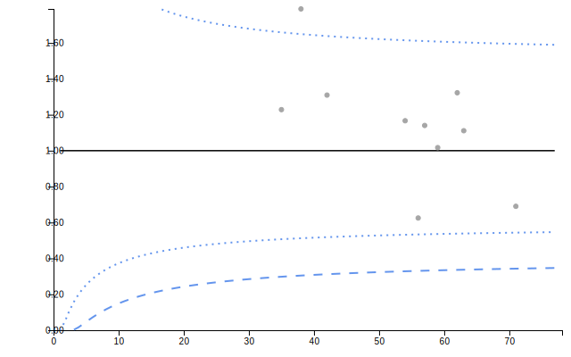
knitr::kable(funnel_sr_od$limits, digits = 3)| denominator | group | numerator | value | ll99 | ll95 | ll68 | ul68 | ul95 | ul99 | target |
|---|---|---|---|---|---|---|---|---|---|---|
| 35 | Hospital I | 43 | 1.229 | 0.298 | 0.507 | 0.729 | 1.314 | 1.659 | 2.115 | 1 |
| 38 | Hospital J | 68 | 1.789 | 0.304 | 0.512 | 0.732 | 1.309 | 1.649 | 2.097 | 1 |
| 42 | Hospital F | 55 | 1.310 | 0.312 | 0.518 | 0.736 | 1.304 | 1.638 | 2.078 | 1 |
| 54 | Hospital B | 63 | 1.167 | 0.328 | 0.532 | 0.744 | 1.294 | 1.615 | 2.036 | 1 |
| 56 | Hospital A | 35 | 0.625 | 0.331 | 0.533 | 0.745 | 1.292 | 1.612 | 2.031 | 1 |
| 57 | Hospital D | 65 | 1.140 | 0.332 | 0.534 | 0.746 | 1.292 | 1.610 | 2.028 | 1 |
| 59 | Hospital G | 60 | 1.017 | 0.333 | 0.536 | 0.747 | 1.290 | 1.608 | 2.024 | 1 |
| 62 | Hospital H | 82 | 1.323 | 0.336 | 0.538 | 0.748 | 1.289 | 1.604 | 2.017 | 1 |
| 63 | Hospital C | 70 | 1.111 | 0.337 | 0.539 | 0.748 | 1.288 | 1.603 | 2.015 | 1 |
| 71 | Hospital E | 49 | 0.690 | 0.343 | 0.543 | 0.751 | 1.284 | 1.595 | 2.000 | 1 |
RC - Rate Funnel
Used for rate data with log transformation.
# Simulate infection rates across hospitals
dat_rc <- data.frame(
hospital = paste0("Hospital ", LETTERS[1:10]),
infections = rpois(10, lambda = sample(5:20, 10)),
patient_days = sample(500:2000, 10)
)
funnel_rc <- funnel(data = dat_rc,
keys = hospital,
numerators = infections,
denominators = patient_days,
funnel_settings = list(chart_type = "RC",
multiplier = 1000))
funnel_rc$static_plot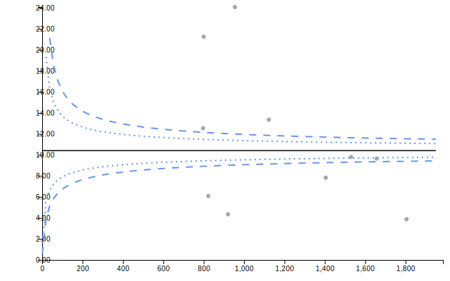
knitr::kable(funnel_rc$limits, digits = 3)| denominator | group | numerator | value | ll99 | ll95 | ll68 | ul68 | ul95 | ul99 | target |
|---|---|---|---|---|---|---|---|---|---|---|
| 797 | Hospital C | 10 | 12.547 | 8.918 | 9.437 | 9.904 | 10.941 | 11.483 | 12.151 | 10.41 |
| 800 | Hospital H | 17 | 21.250 | 8.920 | 9.438 | 9.905 | 10.940 | 11.481 | 12.148 | 10.41 |
| 823 | Hospital I | 5 | 6.075 | 8.940 | 9.451 | 9.912 | 10.932 | 11.465 | 12.121 | 10.41 |
| 921 | Hospital E | 4 | 4.343 | 9.014 | 9.501 | 9.938 | 10.903 | 11.405 | 12.021 | 10.41 |
| 955 | Hospital G | 23 | 24.084 | 9.038 | 9.517 | 9.947 | 10.894 | 11.386 | 11.990 | 10.41 |
| 1123 | Hospital A | 15 | 13.357 | 9.137 | 9.584 | 9.982 | 10.856 | 11.307 | 11.859 | 10.41 |
| 1405 | Hospital D | 11 | 7.829 | 9.264 | 9.668 | 10.026 | 10.807 | 11.208 | 11.696 | 10.41 |
| 1530 | Hospital F | 15 | 9.804 | 9.310 | 9.698 | 10.042 | 10.791 | 11.174 | 11.640 | 10.41 |
| 1657 | Hospital B | 16 | 9.656 | 9.350 | 9.725 | 10.056 | 10.775 | 11.143 | 11.589 | 10.41 |
| 1805 | Hospital J | 7 | 3.878 | 9.392 | 9.752 | 10.071 | 10.760 | 11.111 | 11.537 | 10.41 |
RC Funnel with Overdispersion Adjustment
funnel_rc_od <- funnel(data = dat_rc,
keys = hospital,
numerators = infections,
denominators = patient_days,
funnel_settings = list(chart_type = "RC",
od_adjust = "yes",
multiplier = 1000))
funnel_rc_od$static_plot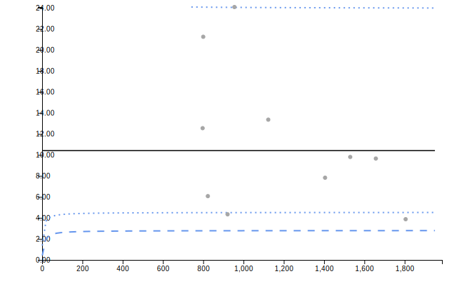
knitr::kable(funnel_rc_od$limits, digits = 3)| denominator | group | numerator | value | ll99 | ll95 | ll68 | ul68 | ul95 | ul99 | target |
|---|---|---|---|---|---|---|---|---|---|---|
| 797 | Hospital C | 10 | 12.547 | 2.776 | 4.501 | 6.803 | 15.928 | 24.073 | 39.039 | 10.41 |
| 800 | Hospital H | 17 | 21.250 | 2.776 | 4.501 | 6.803 | 15.928 | 24.072 | 39.037 | 10.41 |
| 823 | Hospital I | 5 | 6.075 | 2.777 | 4.502 | 6.804 | 15.927 | 24.069 | 39.027 | 10.41 |
| 921 | Hospital E | 4 | 4.343 | 2.779 | 4.505 | 6.806 | 15.922 | 24.054 | 38.991 | 10.41 |
| 955 | Hospital G | 23 | 24.084 | 2.780 | 4.506 | 6.806 | 15.921 | 24.050 | 38.980 | 10.41 |
| 1123 | Hospital A | 15 | 13.357 | 2.783 | 4.509 | 6.809 | 15.915 | 24.033 | 38.936 | 10.41 |
| 1405 | Hospital D | 11 | 7.829 | 2.787 | 4.513 | 6.812 | 15.908 | 24.013 | 38.886 | 10.41 |
| 1530 | Hospital F | 15 | 9.804 | 2.788 | 4.514 | 6.812 | 15.906 | 24.007 | 38.869 | 10.41 |
| 1657 | Hospital B | 16 | 9.656 | 2.789 | 4.515 | 6.813 | 15.904 | 24.001 | 38.855 | 10.41 |
| 1805 | Hospital J | 7 | 3.878 | 2.790 | 4.516 | 6.814 | 15.902 | 23.996 | 38.841 | 10.41 |
Chart Selection Guide
SPC Chart Selection
| Data Type | Chart Type | When to Use |
|---|---|---|
| Individual measurements |
i, i_m, i_mm
|
Single measurement per time point |
| Ratios/efficiency metrics |
i with denominators |
Monitoring rates calculated from num/denom |
| Moving ranges | mr |
Monitoring variation between consecutive points |
| Proportions |
p, pp
|
Numerator ≤ denominator (e.g., defect rates) |
| Rates |
u, up
|
Events per unit exposure (any ratio) |
| Counts | c |
Fixed area of opportunity |
| Sample means | xbar |
Multiple measurements per time point |
| Sample SDs | s |
Monitoring within-sample variation |
| Opportunities between events | g |
Count of non-events between events |
| Time between events | t |
Continuous time intervals |
| Trend visualization only | run |
No statistical limits needed |
Funnel Plot Selection
| Data Type | Chart Type | When to Use |
|---|---|---|
| Proportions | PR |
Numerator ≤ denominator (complication rates, readmissions) |
| Standardised ratios | SR |
Observed/expected (mortality, morbidity ratios) |
| Rates | RC |
Events per exposure (infections per patient-days) |
Overdispersion Adjustment
Use od_adjust = "yes" when: - Data shows more variation
than expected from binomial/Poisson models - There is clustering or
hierarchical structure in the data - Groups have different underlying
risks not captured by standardization - Control limits appear too narrow
for the observed variation
Data Requirements Summary
SPC Charts
| Chart Type | Numerator | Denominator | Standard Deviation |
|---|---|---|---|
| run, i, i_m, i_mm, mr | ✓ | Optional* | - |
| p, pp | ✓ | ✓ | - |
| u, up | ✓ | ✓ | - |
| c | ✓ | - | - |
| xbar | ✓ | ✓ | ✓ |
| s | ✓** | ✓ | - |
| g, t | ✓ | - | - |
*Optional denominator creates a ratio chart **For s-chart, numerator contains standard deviation values
Funnel Plots
All funnel plot types require: - Keys (organization/group identifier) - Numerators (event counts or observed values) - Denominators (sample sizes or expected values)
Additional constraints: - PR: Numerator must be ≤ denominator - SR: Typically observed/expected counts or deaths - RC: Any rate data (events/exposure)
Additional Resources
For more information, see: - vignette("getting_started")
- Basic package usage - vignette("interactive_charts") -
Interactive features with crosstalk